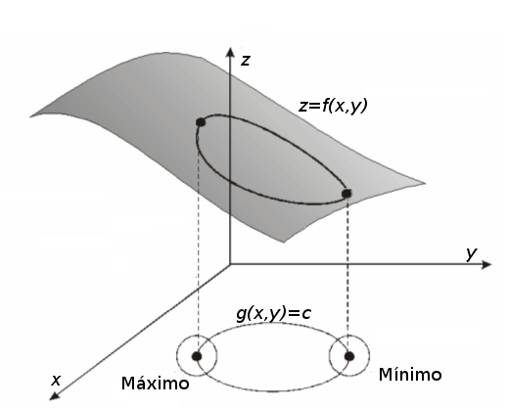
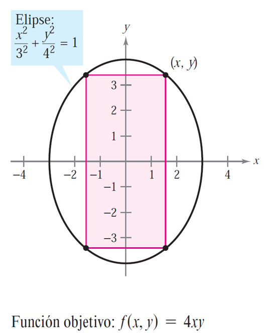
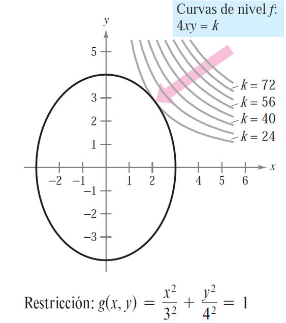

Extremos absolutos
Contents
3.7. Extremos absolutos#
Vamos a enfrentarnos ahora al equivalente multidimensional a los ejercicios que hacíais en vuestra tierna juventud (o sea: el año pasado) de calcular el máximo y el mínimo absoluto de una función definida en un intervalo cerrado y acotado.
Lo que en el caso de una variable era simplemente incluir los extremos del intervalo (es decir, evaluar la función en dos puntos, \(a\) y \(b\)), ahora se complica y se enriquece mucho.
Las restricciones (o ligaduras) entre variables nos permiten limitar el conjunto en el que buscamos los extremos a un subconjunto cerrado y acotado del dominio en el que ya podremos buscar los extremos absolutos de la función.
{kind=link}
Al igual que pasaba en funciones de una variable, en estos casos el máximo (o mínimo) absoluto, puede estar en el interior del dominio o en su frontera. En el interior, aplicaremos las técnicas que hemos aprendido en la sección anterior (en general, buscaremos los puntos críticos), pero ¿en la frontera?
Ahora, esta frontera, que para funciones de una variable sólo tiene dos puntos (los extremos del intervalo), se convierte en un conjunto infinito y, por tanto, es imposible evaluar la función objetivo en todos ellos. Tendremos, en primer lugar, que localizar los candidatos a extremos absolutos en ella.
En esta sección estudiaremos la técnica que se utiliza en estos casos: el llamado método de los multiplicadores de Lagrange.
3.7.1. Existencia de solución#
Vamos, antes de nada, a definir correctamente nuestro campo de juego.
Definition (Conjunto cerrado y acotado)
Un conjunto \(C\) en \(\mathbb{R}^{2}\) se dice cerrado y acotado si:
Contiene a toda su frontera.
Está contenido en alguna bola de centro \((0,0)\).
{kind=link}
Nota: Una definición similar nos valdría para \(\mathbb{R}^{3}\).
Ahora, nos preguntamos si el problema de calcular máximo y mínimo absoluto de una función sobre un conjunto \(C\) tiene solución. La respuesta, será afirmativa, si se cumplen dos condiciones, que especifica nuestro viejo conocido: el teorema de Weierstrass (en este caso, para funciones de dos variables).
Theorem (Teorema de Weierstrass )
Sea \(f:C\subset\mathbb{R}^{2}\to\mathbb{R}\). Si \(f\) es continua y \(C\) es un conjunto cerrado y acotado, entonces \(f\) alcanza en \(C\) un máximo y un mínimo absoluto, es decir:
Existe, por lo menos, un punto \(\mathbf{x}_{1}\in C\) en el que \(f\) toma su valor mínimo:
\[f(\mathbf{x}_{1})=\min_{\mathbf{x}\in C}f(\mathbf{x}).\]Existe, por lo menos, un punto \(\mathbf{x}_{2}\in C\) en el que \(f\) toma su valor máximo:
\[f(\mathbf{x}_{2})=\max_{\mathbf{x}\in C}f(\mathbf{x}).\]
3.7.2. Método de los multiplicadores de Lagrange con una restricción#
Example
Mostraremos cómo funciona esta técnica sobre un problema/ejemplo: Vamos a buscar el rectángulo de área máxima que puede estar inscrito en la elipse de ecuación
Entonces, consideramos un rectángulo arbitrario inscrito en dicha elipse, con \((x,y)\) el vértice que se encuentra en el primer cuadrante, como se muestra en la siguiente figura.
{kind=link}
Debido a que el rectángulo tiene lados de longitudes \(2x\) y \(2y\), su área será
Por otro lado, la elección de \((x, y)\) se limita a los puntos del primer cuadrante que están sobre la elipse
Ahora, consideramos esta ecuación como la curva de nivel uno de la función
Al mismo tiempo, las curvas de nivel de \(f\) representan una familia de hipérbolas:
En esta familia, las curvas de nivel factibles se corresponden con las hipérbolas que intersecan a la elipse. Maximizar \(f\) sobre la elipse, consiste en encontrar la hipérbola de nivel máximo que interseca a la elipse. La curva de nivel que hace esto es la que es tangente a la elipse, como se muestra en la figura, alcanzándose el óptimo global en el punto de tangencia.
{kind=link}
Para encontrar este valor, hay que tener en cuenta que el vector gradiente es ortogonal a las curvas de nivel, y en consecuencia dos curvas son tangentes en un punto si y solo si sus gradientes son paralelos. Esto se traduce en que \(\nabla f\) debe ser múltiplo escalar de \(\nabla g\) en el óptimo global de nuestro problema (punto de tangencia):
para algún \(\lambda \in \mathbb{R}\). En el contexto de problemas de optimización, este escalar, que se suele denotar por \(\lambda\), se llama multiplicador de Lagrange. Esta ecuación junto con la restricción forman un sistema de condiciones necesarias de extremo global, como se establece en los siguientes teoremas.
Theorem (Teorema de Lagrange )
Sean \(f\) y \(g\) dos funciones escalares arbitrarias. Suponemos que sus primeras derivadas parciales son funciones continuas. Sea \(\mathbf{x}_0\) un extremo de \(f\) sujeto a la restricción \(g(\mathbf{x})=c\).
Entonces, si \(\nabla g(\mathbf{x}_0)\neq \mathbf{0}\), existe un número real \(\lambda\) tal que
Denominaremos a \(\lambda\), multiplicador de Lagrange.
A continuación, aplicamos este teorema a problemas de optimización en dos variables e indicamos los pasos a seguir para su resolución, resultando inmediata su exensión a más variables.
Remark (Método de los multiplicadores de Lagrange en 2D)
Sean \(f\) y \(g\) dos funciones escalares de dos variables con derivadas parciales primeras continuas. Para hallar el óptimo (máximo o mínimo) de \(f\) sujeto a la restricción \(g(x,y)=c\), en caso de existir, seguimos los pasos descritos a continuación.
Resolvemos simultáneamente las ecuaciones \(\nabla f(x,y)=\lambda \nabla g(x,y)\) y \(g(x,y)=c\), calculando las soluciones del siguiente sistema de ecuaciones:
Evaluamos \(f\) en cada punto solución obtenido en el primer paso. El valor mayor da el máximo de \(f\) sujeto a la restricción \(g(x,y)=c\), y el valor menor da el mínimo de \(f\) sujeto a la restricción \(g(x,y)=c\).
3.7.3. Ejemplo 1. Cálculo de extremos absolutos sobre una restricción#
Retomamos el ejemplo anterior para mostrar un primer ejemplo del método de los multiplicadores de Lagrange. En este primer ejemplo, se trata de calcular los extremos absolutos sobre el conjunto definido por la restricción: sobre la piel de la elipse.
Entonces, se trata de
Example (Máximo absoluto en la piel de la elipse)
Calcular el máximo absoluto de
en el conjunto
En primer lugar, observamos que dicho problema tiene solución puesto que la función a optimizar es continua y la región de soluciones factibles es cerrada y acotada. Además, se observa que el gradiente de \(g\) no se anula sobre ningún punto factible. A continuación, planteamos y resolvemos el sistema de ecuaciones que tienen que satisfacer los extremos globales.
Igualando las dos expresiones para \(\lambda\) obtenidas en las dos primeras ecuaciones se deduce
Sustituyendo esta expresión para \(y^2\) en la tercera ecuación, se obtiene el valor de \(x\):
Volvemos a utilizar la expresión para \(y^2\) de arriba, esta vez para despejar el valor de \(y\) a partir del de \(x\):
Como \(x,y\geq0\), elegimos los valores positivos y concluimos que el rectángulo de área máxima inscrito en la elipse tiene área
A continuación, vamos a resolver este ejercicio pero con la ayuda del módulo Sympy.
import sympy as sp
x, y, l = sp.symbols('x y l', real=True) # definimos las variables simbólicas x, y, l
f = sp.Lambda((x,y), 4*x*y) # función a optimizar
g = sp.Lambda((x,y), x**2/9 + y**2/16) # restricción
# Cálculo de puntos críticos (posibles extremos globales)
grad_f = sp.transpose(sp.Matrix([f(x,y)]).jacobian([x,y]))
grad_g = sp.transpose(sp.Matrix([g(x,y)]).jacobian([x,y]))
sol = sp.solve((sp.Eq(grad_f[0],l*grad_g[0]),sp.Eq(grad_f[1],l*grad_g[1]),sp.Eq(g(x,y),1)),
(x,y,l), dict=True)
for p in sol:
print('Punto crítico (x,y,lambda)=',p,'; f(x,y)=', sp.N(f(p[x],p[y])))
Punto crítico (x,y,lambda)= {l: -24, x: -3*sqrt(2)/2, y: 2*sqrt(2)} ; f(x,y)= -24.0000000000000
Punto crítico (x,y,lambda)= {l: -24, x: 3*sqrt(2)/2, y: -2*sqrt(2)} ; f(x,y)= -24.0000000000000
Punto crítico (x,y,lambda)= {l: 24, x: -3*sqrt(2)/2, y: -2*sqrt(2)} ; f(x,y)= 24.0000000000000
Punto crítico (x,y,lambda)= {l: 24, x: 3*sqrt(2)/2, y: 2*sqrt(2)} ; f(x,y)= 24.0000000000000
Podemos comprobamos visualmente el tipo de puntos críticos como sigue.
import numpy as np
import matplotlib.pyplot as plt
%matplotlib inline
# Nube de puntos para el cálculo de las curvas de nivel
N = 100
xvec = np.linspace(-5, 5, N)
yvec = np.linspace(-5, 5, N)
X, Y = np.meshgrid(xvec, yvec)
F = sp.lambdify((x,y),f(x,y),"numpy")
# Representación gráfica de f
plt.contourf(X, Y, F(X,Y))
plt.colorbar()
plt.xlabel('x')
plt.ylabel('y')
plt.axis('square')
# Representación gráfica de la restricción
xvec = np.linspace(-3, 3, N)
sol_curve = sp.solve(sp.Eq(g(x,y),1),y) # despejar y en función de x en g(x,y)=1
for c in sol_curve:
curve = sp.lambdify(x,c,"numpy")
plt.plot(xvec, curve(xvec),'r')
# Representación gráfica de los extremos relativos
for p in sol:
plt.plot(p[0],p[1],'ko')
plt.show()
3.7.4. Ejemplo 2. Cálculo de extremos absolutos sobre \(C\): interior y frontera#
Vamos a un problema muy similar… pero no exactamente igual. Ahora se trata de calcular extremos absolutos en la elipse, incluyendo su interior y su frontera.
Se trata de
Example (Máximo absoluto en la elipse: interior + piel)
Calcular el máximo absoluto de
en el conjunto
Este problema hay que hacerlo en dos pasos:
Interior de la elipse. Buscaremos los puntos críticos y evaluaremos \(f\) en ellos.
Frontera de la elipse. Utilizando los multiplicadores de Lagrange, buscaremos los candidatos a extremos absolutos sobre la piel de la elipse y evaluaremos \(f\) en ellos.
¡Vamos con la primer paso!
La función \(f\) es polinómica, por lo que ya sabemos que será diferencial en todo su dominio. Por lo tanto, los puntos críticos coinciden con los puntos en los que el gradiente de \(f\) es \(\mathbf{0}\). Entonces:
Por lo tanto, el único punto crítico de \(f\) en el interior de la elipse es el \((0,0)\).
Evaluamos \(f\) en ese punto: \(f(0,0) = 0\).
Ahora, el segundo paso:
No la vamos a desarrollar ahora, porque ya está completa en el ejemplo anterior.
Los candidatos, con la correspondiente evaluación de \(f\) son, en este segundo caso:
\(\left(\frac{3}{\sqrt{2}},2\sqrt{2}\right) \to f\left(\frac{3}{\sqrt{2}},2\sqrt{2}\right) = 24\).
\(\left(-\frac{3}{\sqrt{2}},2\sqrt{2}\right) \to f\left(-\frac{3}{\sqrt{2}},2\sqrt{2}\right) = -24\).
\(\left(\frac{3}{\sqrt{2}},-2\sqrt{2}\right) \to f\left(\frac{3}{\sqrt{2}},-2\sqrt{2}\right) = -24\).
\(\left(-\frac{3}{\sqrt{2}},-2\sqrt{2}\right) \to f\left(-\frac{3}{\sqrt{2}},-2\sqrt{2}\right) = 24\).
Entonces, entre los cinco candidatos a extremos absolutos observamos que el máximo absoluto se alcanza en \(\left(\frac{3}{\sqrt{2}},2\sqrt{2}\right)\) y \(\left(-\frac{3}{\sqrt{2}},-2\sqrt{2}\right)\), alcanzando la función \(f\) en esos puntos un valor de \(24\) unidades.
import sympy as sp
x, y, l = sp.symbols('x y l', real=True) # definimos las variables simbólicas x, y, l
f = sp.Lambda((x,y), 4*x*y) # función a optimizar
g = sp.Lambda((x,y), x**2/9 + y**2/16) # restricción
# Primer paso: puntos críticos de f en el interior de la elipse
grad_f = sp.transpose(sp.Matrix([f(x,y)]).jacobian([x,y]))
sol1 = sp.solve((sp.Eq(grad_f[0],0),sp.Eq(grad_f[1],0)),(x,y), dict=True)
# Segundo paso: posibles extremos en la frontera de la elipse
grad_g = sp.transpose(sp.Matrix([g(x,y)]).jacobian([x,y]))
sol2= sp.solve((sp.Eq(grad_f[0],l*grad_g[0]),sp.Eq(grad_f[1],l*grad_g[1]),sp.Eq(g(x,y),1)),
(x,y,l), dict=True)
sol = sol1 + sol2
for p in sol:
print('Punto crítico (x,y,lambda)=',p,'; f(x,y)=', sp.N(f(p[x],p[y])))
Punto crítico (x,y,lambda)= {y: 0, x: 0} ; f(x,y)= 0
Punto crítico (x,y,lambda)= {l: -24, x: -3*sqrt(2)/2, y: 2*sqrt(2)} ; f(x,y)= -24.0000000000000
Punto crítico (x,y,lambda)= {l: -24, x: 3*sqrt(2)/2, y: -2*sqrt(2)} ; f(x,y)= -24.0000000000000
Punto crítico (x,y,lambda)= {l: 24, x: -3*sqrt(2)/2, y: -2*sqrt(2)} ; f(x,y)= 24.0000000000000
Punto crítico (x,y,lambda)= {l: 24, x: 3*sqrt(2)/2, y: 2*sqrt(2)} ; f(x,y)= 24.0000000000000
3.7.5. Método de los multiplicadores de Lagrange con dos restricciones#
El método anterior se puede extender para problemas de optimización que impliquen dos restricciones, con funciones asociadas \(g\) y \(h\). En este caso, debe incluirse un segundo multiplicador de Lagrange, \(\mu\), que interviene en la ecuación que hay que añadir a las restricciones, y que es la siguiente